Ход проекта
- 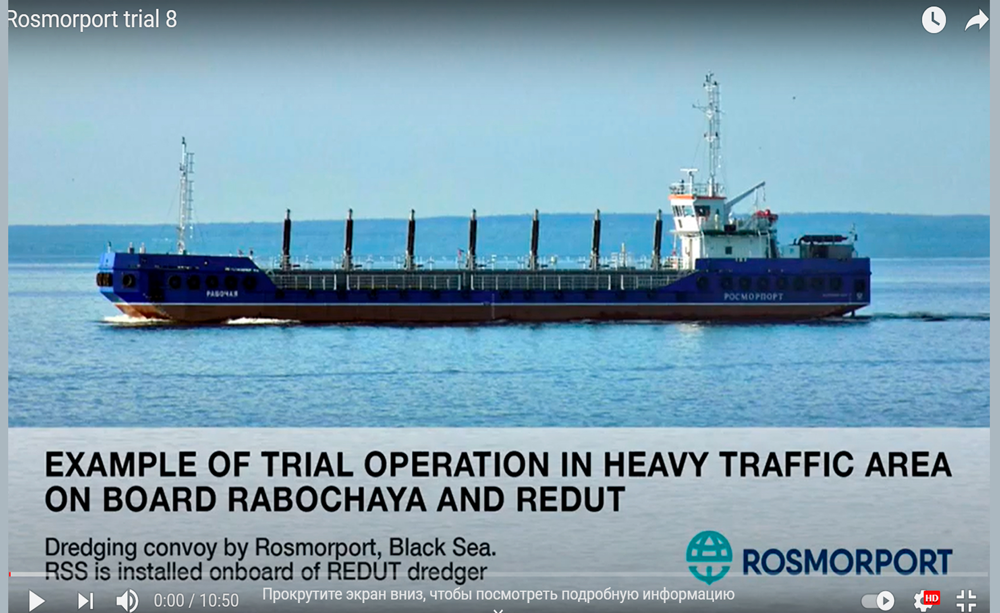
28 апреля 2021
Команда проекта начала публикацию видео опытной эксплуатации на канале Youtube
- 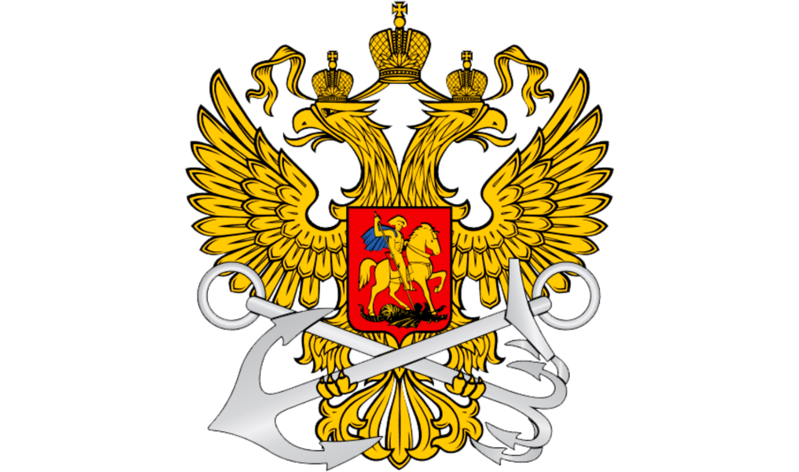
19 января 2021
Федеральное агентство морского и речного транспорта опубликовало Рекомендации по применению Международных правил предотвращения столкновения судов 1972 года (МППСС-72) автономными судами
- 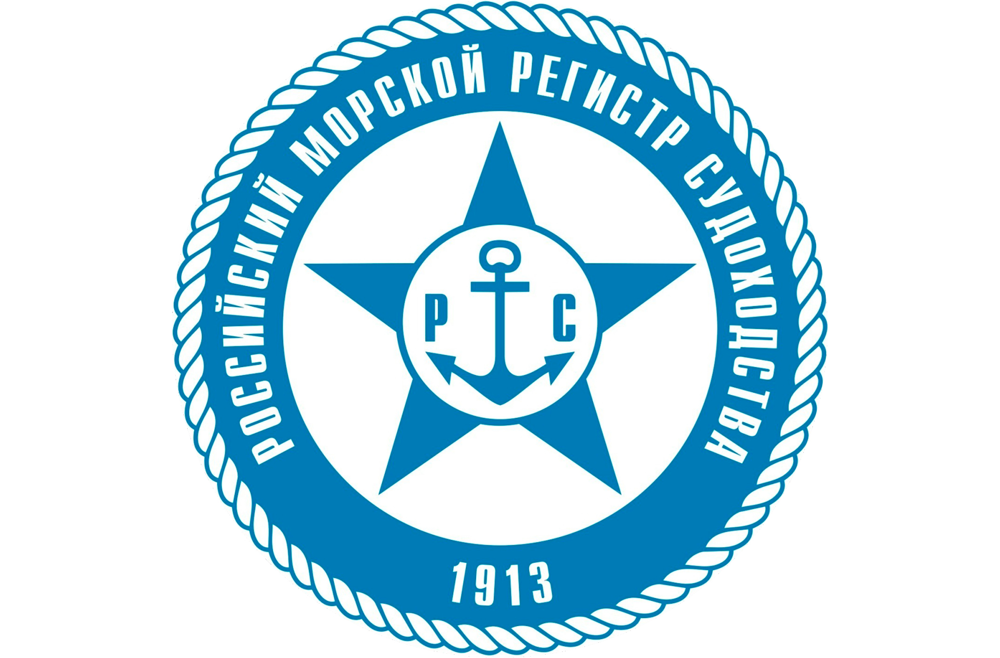
12 декабря 2020
Российский морской регистр судоходства выдал одобрение в принципе на комплекс технических решений для а-Навигации
- 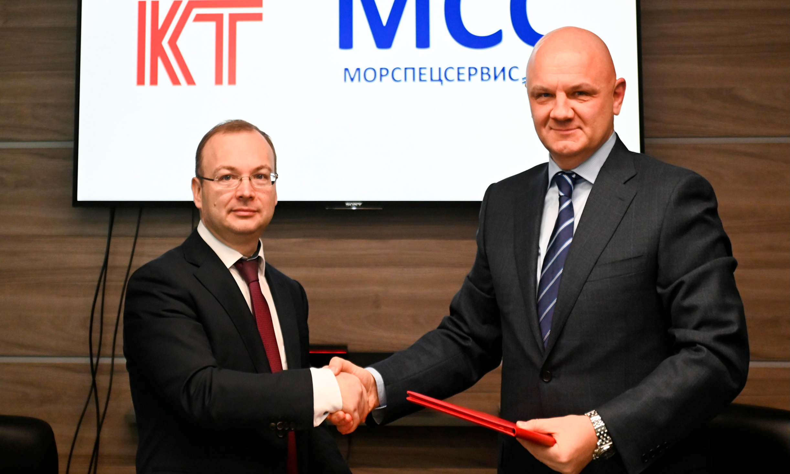
08 декабря 2020
Первые две судоходные компании подписали соглашения о намерениях оснастить 20 судов системами а-Навигации, начиная с 2021 г.
- 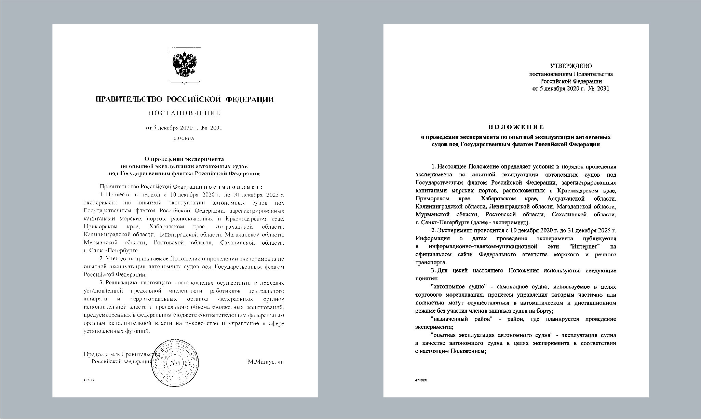
05 декабря 2020
Утверждено Постановление Правительства РФ о проведении национального эксперимента по широкой опытной эксплуатации МАНС под Государственным флагом России
05 октября 2020
Начаты испытания в условиях реальной эксплуатации на судах

- 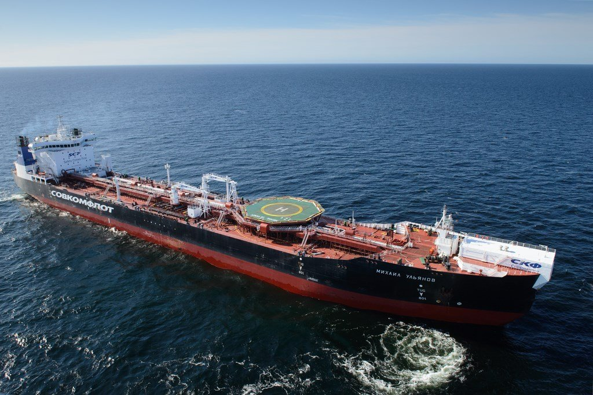
15 сентября 2020
Завершена установка экспериментального оборудования на суда Михаил Ульянов, Рабочая, Редут, Росморпорт
- 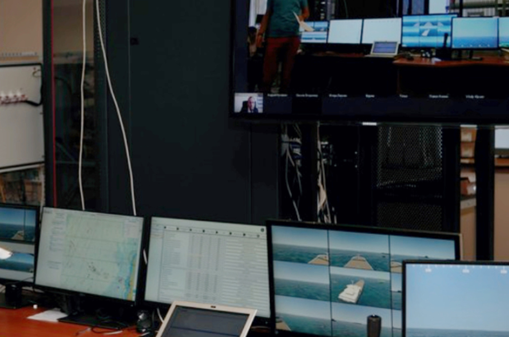
07 августа 2020
Завершены береговые (стендовые) испытания комплекса систем
- 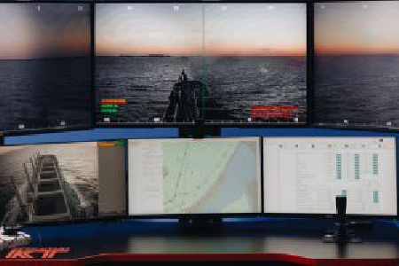
20 марта 2020
Экспериментальное оборудование произведено
10 марта 2020
В Международную морскую организацию (ИМО) направлены ноты о проведении пилотного проекта БЭС-КФ и планируемых изменений в законодательстве России
- 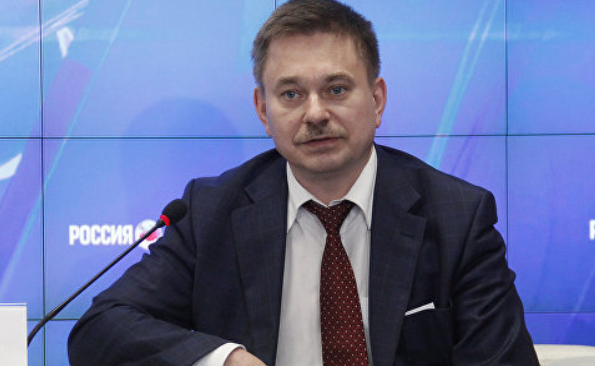
20 февраля 2020
Проекты федерального закона и постановления правительств по автономным судам опубликованы Минпромторгом России
- 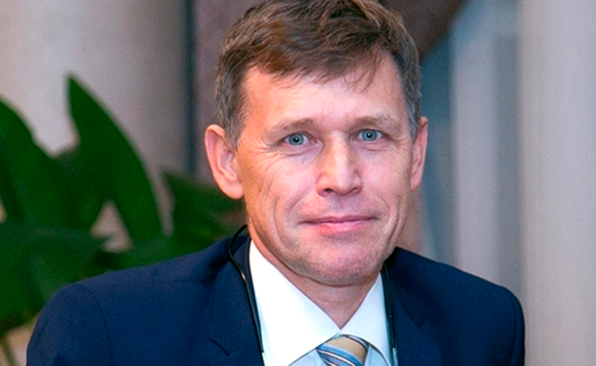
25 декабря 2019
Разработаны предложения по пакету нормативных изменений для обеспечения эксплуатации МАНС в России
- 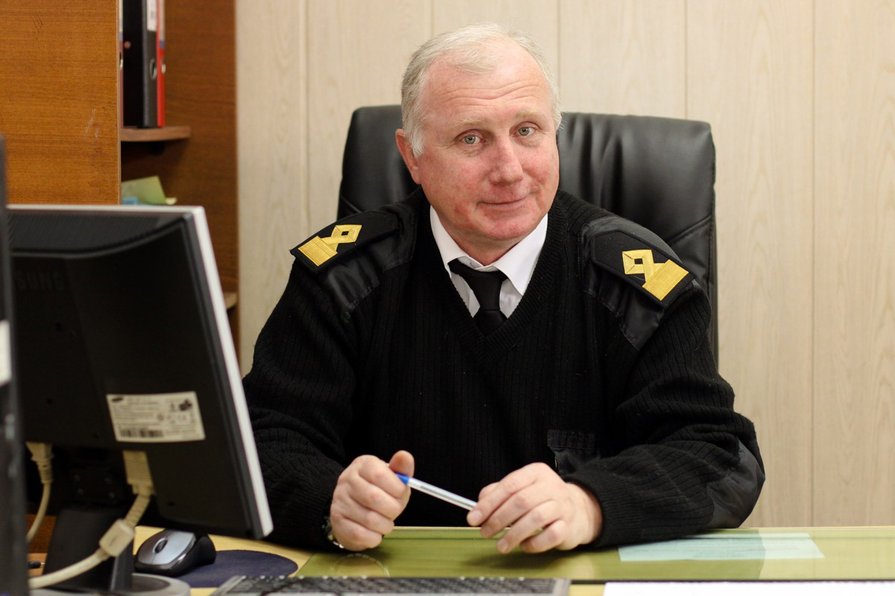
25 октября 2019
Экспертной группой разработаны рекомендации по применению МППСС-72 в системах автоматического судовождения
- 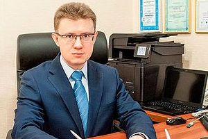
30 августа 2019
Проведена оценка рисков новой технологии
- 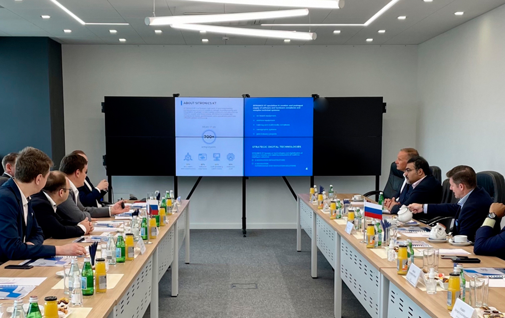
25 июля 2019
Прототипы систем разработаны и представлены совместной рабочей группе проекта
- 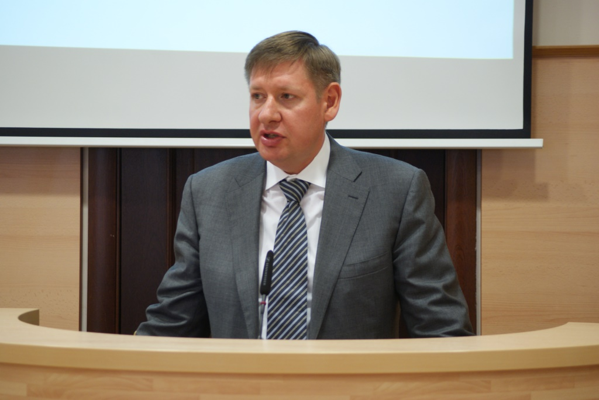
19 марта 2019
Разработаны базовая методология, системная архитектура и функциональные требования
- 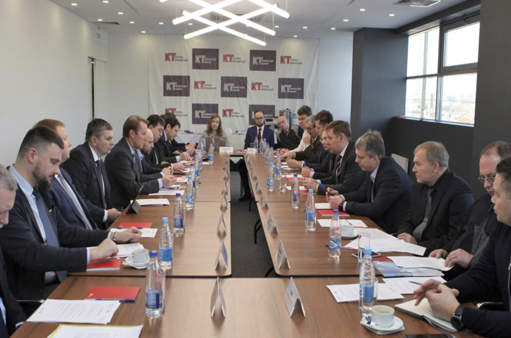
30 января 2019
Пилотный проект БЭС-КФ инициирован группой компаний, создана совместная рабочая группа и начата разработка концепции
- 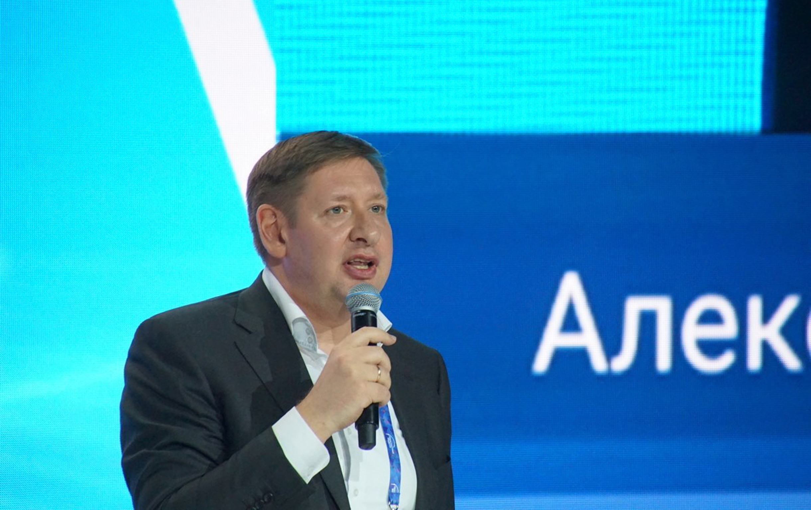
20 ноября 2018
На формуе "Транспортная неделя" Александр Пинский анонсировал начало пилотного проекта по автоматическому и дистанционному судовождению